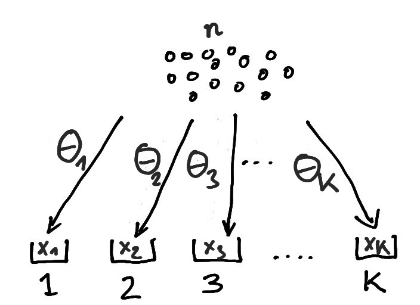
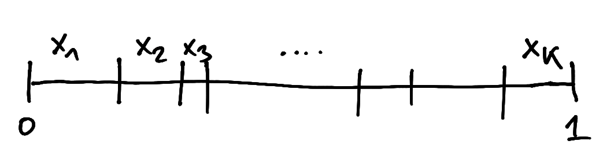

6 Multivariate distributions
6.1 Independent multivariate Poisson distribution
The independent multivariate Poisson distribution \(\operatorname{Pois}(\boldsymbol \mu)\) is a generalisation of the univariate Poisson distribution \(\operatorname{Pois}(\mu)\) (Section 5.1).
The two-dimensional independent bivariate \(\operatorname{Pois}(\boldsymbol \mu)\) generalises the binomial distribution \(\operatorname{Bin}(n, \theta)\) (Section 5.2). The \(K\)-dimensional independent multivariate \(\operatorname{Pois}(\boldsymbol \mu)\) generalises the multinomial distribution \(\operatorname{Mult}(n, \boldsymbol \theta)\) with \(K\) groups (Section 6.2).
The independent multivariate Poisson distribution can be derived as a mixture of multinomial distributions with Poisson weights, see Section 6.9.3 for details.
Standard parametrisation
A \(K\)-dimensional independent multivariate Poisson-distributed random variable is denoted by \[ \boldsymbol x\sim \operatorname{Pois}(\boldsymbol \mu) \] with \(\mu_k \geq 0\) and support \(x_k \in \{0, 1, \ldots\}\) for \(k \in \{1, \ldots, K\}\).
The expected value is \[ \operatorname{E}(\boldsymbol x) = \boldsymbol \mu \] and the variance is \[ \operatorname{Var}(\boldsymbol x) = \operatorname{Diag}(\boldsymbol \mu) \]
The corresponding pmf is \[ \begin{split} p(\boldsymbol x| \boldsymbol \mu) &= \prod_{k=1}^K \frac{\mu_k^{x_k} e^{-\mu_k} }{x_k!} \\ & = e^{-\mu_{\text{tot}}} \prod_{k=1}^K \frac{\mu_k^{x_k} }{x_k!} \\ &= \frac{ \mu_{\text{tot}}^{x_{\text{tot}}} e^{-\mu_{\text{tot}}}}{x_{\text{tot}}!} W(\boldsymbol x) \prod_{k=1}^K \left(\frac{\mu_k}{\mu_{\text{tot}}}\right)^{x_k} \\ \end{split} \] with total count \(x_{\text{tot}} =\sum_{k=1}^K x_k\), total mean \(\mu_{\text{tot}} = \sum_{k=1}^K \mu_k\) and where \[ W(\boldsymbol x) = \binom{x_{\text{tot}}}{x_1, \ldots, x_K} = \frac {x_{\text{tot}}!}{x_1! \, x_2! \, \ldots \, x_K! } \] is the multinomial coefficient.
The \(K\)-dimensional independent multivariate Poisson distribution factors into the product of \(K\) individual univariate Poisson distributions.
For the univariate Poisson distribution the pmf is given by dpois(), the distribution function is ppois() and the quantile function is qpois(). The corresponding random number generator is rpois(). In the above functions, set lambda=\(\mu_k\).
\(\operatorname{Pois}(\boldsymbol \mu)\) is a \(K\)-dimensional exponential family (Chapter 7) that can be written as follows:
- base function: \(h(\boldsymbol x) = \frac{W(\boldsymbol x)}{x_{\text{tot}}!}= \frac{1}{x_1! \, x_2! \, \ldots \, x_K!}\)
- canonical statistic: \(t(\boldsymbol x) = \boldsymbol x\)
- canonical parameter: \(\boldsymbol \eta= (\log \mu_k)\)
- expectation parameter: \(\boldsymbol \mu_t = \boldsymbol \mu\)
- partition function: \(z(\eta) = \exp \sum_{k=1}^K \exp \eta_k = \exp \mu_{\text{tot}}\)
- log-partition function: \(a(\eta) = \log z(\eta) = \sum_{k=1}^K \exp \eta_k\)
Derivation as rare event limit of the multinomial distribution
The \((K-1)\)-dimensional independent multivariate Poisson distribution \(\operatorname{Pois}(\mu_1, \ldots, \mu_{K-1})\) is a limiting case of the multinomial distribution with \(K\) groups when the number of trials \(n\) is large and and the success probabilities \(\theta_k\) are small, with \(n\to \infty\) and \(\theta_k \to 0\) with fixed mean \(\mu_k = n \theta_k\) (for \(k \neq K\)).
Let \(x_{\bar{K}}= \sum_{k\neq K} x_k = n - x_K\) denote the counts not in group \(K\) and \(\mu_{\bar{K}}= \operatorname{E}(x_{\bar{K}}) = \sum_{k\neq K} \mu_k = n - \mu_K\) is the corresponding expectation. In mean parametrisation of the joint pmf for \(x_1, \ldots x_{K-1}\) is \[ \begin{split} p(x_1, \ldots, x_{K-1} | n, \mu_1, \ldots, \mu_{K-1} ) &=\binom{n}{x_1, \ldots, x_K}\prod_{k=1}^K \left(\frac{\mu_k}{n}\right)^{x_k} \\ &=\left( \prod_{k\neq K} \frac{\mu_k^{x_k}}{x_k!}\right) \left( 1- \frac{\mu_{\bar{K}}}{n}\right)^{n}\, \prod_{i=1}^{x_{\bar{K}}} \frac{n-i+1}{n-\mu_{\bar{K}}} \\ \end{split} \]
For \(n\rightarrow \infty\) with fixed \(\mu_k\) (\(k\neq K\)), the second factor converges to \(e^{-\mu_{\bar{K}}}\) and the last product term to 1 so that \[ p(x_1, \ldots, x_{K-1} | n, \mu_1, \ldots, \mu_{K-1} ) \to e^{-\mu_{\bar{K}}} \prod_{k\neq K} \frac{\mu_k^{x_k}}{x_k!} \] which is the pmf of the \((K-1)\)-dimensional independent multivariate Poisson distribution \(\operatorname{Pois}(\mu_1, \ldots, \mu_{K-1})\).
Derivation as rare failure limit of the negative multinomial distribution
The \(K\)-dimensional independent multivariate Poisson distribution \(\operatorname{Pois}(\boldsymbol \mu)\) is a limiting case of the negative multinomial distribution \(\operatorname{NMult}(n, \boldsymbol \lambda)\) (Section 6.3) with \(K\) failure groups for large number of successes \(n\to \infty\) and fixed mean \(\boldsymbol \mu= \frac{n}{1-\lambda_{\text{tot}}} \boldsymbol \lambda\), and hence \(\boldsymbol \lambda\to 0\) (i.e. rare failures).
In mean parametrisation the pmf of the negative multinomial distribution \(\operatorname{NMult}\left(n, \boldsymbol \lambda= \frac{1}{n+\mu_{\text{tot}}} \boldsymbol \mu\right)\) is \[ \begin{split} p(\boldsymbol x| n, \boldsymbol \mu) & = \frac{\Gamma(x_{\text{tot}}+n)}{x_1! \ldots x_K! \, \Gamma(n)} \, \left( \frac{n}{n+\mu_{\text{tot}}} \right)^n \prod_{k=1}^K \left( \frac{\mu_k}{n+\mu_{\text{tot}}} \right)^{x_k} \\ &=\left( \prod_{k=1}^K \frac{\mu_k^{x_k}}{x_k!} \right) \left(1 + \frac{\mu_{\text{tot}}}{n} \right)^{-n} \, \frac{\Gamma(x_{\text{tot}}+n)}{\Gamma(n)(n+\mu_{\text{tot}})^{x_{\text{tot}}}}\\ \end{split}\] For \(n\rightarrow \infty\) with fixed \(\boldsymbol \mu\), the second factor converges to \(e^{-\mu_{\text{tot}}}\) and the last term to 1 (since, for large \(n\), \(\Gamma(x_{\text{tot}}+n) \approx \Gamma(n) n^{x_{\text{tot}}}\)) so that \[ p(\boldsymbol x| n, \boldsymbol \mu) \to e^{-\mu_{\text{tot}}} \prod_{k=1}^K \frac{\mu_k^{x_k}}{x_k!} \] which is the pmf of \(\operatorname{Pois}(\boldsymbol \mu)\).
Convolution property
The convolution of \(n\) independent multivariate Poisson distributions, each with a possibly different mean parameter \(\boldsymbol \mu_i\), yields another independent multivariate Poisson distribution: \[ \sum_{i=1}^n \operatorname{Pois}(\boldsymbol \mu_i) \sim \operatorname{Pois}\left(\sum_{i=1}^n \boldsymbol \mu_i\right) \]
Since \(n\) can be an arbitrary positive integer the independent multivariate Poisson distribution is infinitely divisible.
From the convolution property it follows that the total count \(x_{\text{tot}} =\sum_{k=1}^K x_k\) follows a univariate Poisson distribution (Section 5.1) \[ x_{\text{tot}} \sim \operatorname{Pois}(\mu_{\text{tot}}) \] with mean \(\mu_{\text{tot}} = \sum_{k=1}^K \mu_k\).
Normal approximation
Following the central limit theorem (Section 3.3), for large \(\boldsymbol \mu\) the independent multivariate Poisson distribution \(\operatorname{Pois}(\boldsymbol \mu)\) can be well approximated by a multivariate normal distribution (Section 5.5) with the same mean and (diagonal) variance.
6.2 Multinomial distribution
The multinomial distribution \(\operatorname{Mult}(n, \boldsymbol \theta)\) is the multivariate generalisation of the binomial distribution \(\operatorname{Bin}(n, \theta)\) (Section 5.2) from two to \(K\) groups.
A special case is the categorical distribution \(\operatorname{Cat}(\boldsymbol \theta)\) that generalises the Bernoulli distribution \(\operatorname{Ber}(\theta)\).
The \((K-1)\)-dimensional independent multivariate Poisson distribution \(\operatorname{Pois}(\mu_1, \ldots, \mu_{K-1})\) is a limiting case for rare events.
Standard parametrisation
A multinomial random variable \(\boldsymbol x\) describes describes the allocation of \(n\) items to \(K\) classes. We write \[ \boldsymbol x\sim \operatorname{Mult}(n, \boldsymbol \theta) \] where the parameter vector \(\boldsymbol \theta=(\theta_1, \ldots, \theta_K)^T\) specifies the probability of each of the \(K\) classes, with \(\theta_k \in [0,1]\) and \(\sum_{k=1}^K \theta_k = 1\). Thus, there are \(K-1\) independent elements in \(\boldsymbol \theta\). The number of classes \(K\) is implicitly given by the dimension of the vector \(\boldsymbol \theta\). The parameter \(n\) is a nonnegative integer.
Each element of the vector \(\boldsymbol x= (x_1, \ldots, x_K)^T\) is an integer \(x_k \in \{0, 1, \ldots, n\}\). The total count across all \(K\) classes \(x_{\text{tot}} = \sum_{k=1}^K x_k = n\) is constant and equals the number of trials. Therefore, \(\boldsymbol x\) satisfies the constraint \(\boldsymbol x^T \mathbf 1_K = n\). The support of \(\boldsymbol x\) is a \(K-1\)-dimensional space and it notably depends on \(n\) as the upper endpoint in each dimension.

The multinomial distribution describes the allocation of \(n\) items to \(K\) bins where \(\boldsymbol \theta\) gives the correspoinding bin probabilities (Figure 6.1).
Another interpretation is as an urn model distribution. Suppose an urn contains \(K\) types of balls, occurring in proportions \(\theta_1, \ldots, \theta_K\), respectively. The multinomial distribution models the counts of the number of balls of each type when drawing from the urn with replacement, until \(n\) balls of any type have been drawn.
The expected value is \[ \operatorname{E}(\boldsymbol x) = n \boldsymbol \theta= \boldsymbol \mu \] with \(\mu_k \in [0,n]\) and \(\sum^{K}_{k=1}\mu_k = n\).
The covariance matrix is \[ \begin{split} \operatorname{Var}(\boldsymbol x) &= n (\operatorname{Diag}(\boldsymbol \theta) - \boldsymbol \theta\boldsymbol \theta^T) \\ &= \operatorname{Diag}(\boldsymbol \mu) - \frac{\boldsymbol \mu\boldsymbol \mu^T}{n}\\ \end{split} \] The covariance matrix is singular by construction because of the dependencies among the elements of \(\boldsymbol x\). For large \(n\to \infty\) the covariances (off-diagonal elements) vanish and the variance becomes a diagonal matrix with the mean on the diagonal.
The corresponding pmf is \[ p(\boldsymbol x| n, \boldsymbol \theta) = \begin{cases} W(\boldsymbol x) \prod_{k=1}^K \theta_k^{x_k} & \text{subject to $x_{\text{tot}} = \sum_{k=1}^K x_k= n$}\\ 0 & \text{otherwise}\\ \end{cases} \] with the multinomial coefficient \[ W(\boldsymbol x) = \binom{x_{\text{tot}}}{x_1, \ldots, x_K} = \frac {x_{\text{tot}}!}{x_1! \, x_2! \, \ldots \, x_K! } \] accounting for the number of possible permutation of \(n\) items of \(K\) distinct types. Note that the multinomial coefficient \(W(\boldsymbol x)\) does not depend on \(\boldsymbol \theta\).
While all \(K\) elements of \(\boldsymbol x\) appear in the pmf recall that due the dependencies among the \(x_k\) the pmf is defined over a \(K-1\) dimensional support.
In mean parametrisation, with \(\boldsymbol \mu\) as parameter instead of \(\boldsymbol \theta\), the multinomial distribution is specified as \(\operatorname{Mult}\left(n, \boldsymbol \theta= \frac{\boldsymbol \mu}{n}\right)\).
For \(K=2\) the multinomial distribution reduces to the binomial distribution (Section 5.2).
The pmf of the multinomial distribution is given by dmultinom(). The corresponding random number generator is rmultinom(). In the above functions, set size=\(n\) and prob=\(\boldsymbol \theta\).
With fixed \(n\), \(\operatorname{Mult}(n, \boldsymbol \theta)\) is a \((K-1)\)-dimensional exponential family (Chapter 7) that can be written as follows:
- base function: \(h(\boldsymbol x) = W(\boldsymbol x) = \binom{x_{\text{tot}}}{x_1, \ldots, x_K}\)
- canonical statistic: \(\boldsymbol t(\boldsymbol x) = \boldsymbol x\)
- canonical parameter: \(\boldsymbol \eta= (c+\log \theta_k)\)
- expectation parameter: \(\boldsymbol \mu_{\boldsymbol t} =n \boldsymbol \theta\)
- partition function: \(z(\eta) = (\sum_{k=1}^K \exp \eta_k)^n = \exp(cn)\)
- log-partition function: \(a(\eta) =n \log \left(\sum_{k=1}^K \exp \eta_k\right)\)
This is a nonminimal representation with \(K\) parameters \(\eta_1, \ldots, \eta_K\).
A minimal representation with \(K-1\) parameters is obtained, e.g., by setting \(c= -\log \theta_K\) so that \(\eta_k = \log(\theta_k/\theta_K)\) and \(\eta_K = 0\).
Special case: categorical distribution
For \(n=1\) the multinomial distribution reduces to the categorical distribution \(\operatorname{Cat}(\boldsymbol \theta)\) which in turn is the multivariate generalisation of the Bernoulli distribution \(\operatorname{Ber}(\theta)\) from two classes to \(K\) classes.
If a random variable \(\boldsymbol x\) follows the categorical distribution we write \[ \boldsymbol x\sim \operatorname{Cat}(\boldsymbol \theta) \] with class probabilities \(\boldsymbol \theta\). The support is \(x_k \in \{0, 1\}\) with \(x_{\text{\text{tot}}} =1\) and is a \(K-1\) dimensional space.
The random vector \(\boldsymbol x\) takes the form of an indicator vector \(\boldsymbol x= (x_1, \ldots, x_K)^T = (0, 0, \ldots, 1, \ldots, 0)^T\) containing zeros everywhere except for a single element indicating the class to which the item has been allocated. This is called “one hot encoding”, as opposed to “integer encoding” (i.e. stating the class number directly).
The expected value is \[ \operatorname{E}(\boldsymbol x) = \boldsymbol \theta= \boldsymbol \mu \] with \(\mu_k \in [0,1]\) and \(\sum^{K}_{k=1}\mu_k = 1\). The covariance matrix is \[ \begin{split} \operatorname{Var}(\boldsymbol x) &= \operatorname{Diag}(\boldsymbol \theta) - \boldsymbol \theta\boldsymbol \theta^T\\ &= \operatorname{Diag}(\boldsymbol \mu) - \boldsymbol \mu\boldsymbol \mu^T\\ \end{split} \] The covariance matrix is singular because of the dependencies among the elements of \(\boldsymbol x\).
The corresponding pmf is \[ p(\boldsymbol x| \boldsymbol \theta) = \begin{cases} \theta_k & \text{if $x_k = 1$ and all other $x_{i\neq k}=0$} \\ 0 & \text{otherwise}\\ \end{cases} \] Recall that the pmf is defined over the \(K-1\) dimensional support of \(\boldsymbol x\).
For \(K=2\) the categorical distribution reduces to the Bernoulli \(\operatorname{Ber}(\theta)\) distribution.
Special case: Poisson limit for rare events
For large \(n\to \infty\) and fixed means \(\mu_k = n \theta_k\) (\(k\neq K\)), and hence \(\theta_k \to 0\), the multinomial distribution \(\operatorname{Mult}(n, \boldsymbol \theta)\) converges to a \((K-1)\)-dimensional independent multivariate Poisson distribution \(\operatorname{Pois}(\mu_1, \ldots, \mu_{K-1})\).
See Section 6.1 for details.
Convolution property
The convolution of \(n\) multinomial distributions, each with identical bin probabilities \(\boldsymbol \theta\) but possibly different number of items \(n_i\), yields another multinomial distribution with the same parameter \(\boldsymbol \theta\): \[ \sum_{i=1}^n \operatorname{Mult}(n_i, \boldsymbol \theta) \sim \operatorname{Mult}\left(\sum_{i=1}^n n_i, \boldsymbol \theta\right) \]
It follows that the multinomial distribution with \(n\) items is the result of the convolution of \(n\) categorical distributions: \[ \sum_{i=1}^n \operatorname{Cat}(\boldsymbol \theta) \sim \operatorname{Mult}(n, \boldsymbol \theta) \] Thus, repeating the same categorical trial \(n\) times and counting the total number of allocations in each bin yields a multinomial random variable.
Normal approximation
For large \(n\) and fixed \(\boldsymbol \theta\) the multinomial distribution \(\operatorname{Mult}(n, \boldsymbol \theta)\) can be well approximated by a multivariate normal distribution (Section 6.5) with the same mean and variance. This is known as the De Moivre–Laplace theorem, an instance of the central limit theorem (Section 3.3).
The approximating \(K\)-dimensional multivariate normal distribution over the \(K\)-dimensional random vector \(\boldsymbol x\) is degenerate because its variance \(\operatorname{Var}(\boldsymbol x)\) is singular due to the linear constraint \(\boldsymbol x^T \mathbf 1_K =1\). A nondegenerate normal approximation can instead be constructed for a \((K-1)\)-dimensional subset of \(\boldsymbol x\) with nonsingular variance.
Conditioning identity
The multinomial distribution \(\operatorname{Mult}(n, \boldsymbol \theta)\) with \(K\) groups can be obtained from the \(K\)-dimensional independent multivariate Poisson distribution \(\operatorname{Pois}(\boldsymbol \mu)\) (Section 6.1) by conditioning on the total number of counts. Specifically, with \(\sum_{k=1}^K \theta_k = 1\) and \(x_{\text{tot}} = \sum_{k=1}^K x_k\), if \[ \boldsymbol x\sim \operatorname{Pois}(\boldsymbol \mu= n \boldsymbol \theta) \] then \[ \boldsymbol x| (x_{\text{tot}}=n) \sim \operatorname{Mult}(n, \boldsymbol \theta) \]
The pmf for \(\boldsymbol x\sim \operatorname{Pois}(\boldsymbol \mu= n \boldsymbol \theta)\) is (see Section 6.1) \[ \begin{split} p(\boldsymbol x| \boldsymbol \mu= n \boldsymbol \theta) & = \frac{ n^{x_{\text{tot}}} e^{-n} }{x_{\text{tot}}!} W(\boldsymbol x) \prod_{k=1}^K \theta_k^{x_k} \\ \end{split} \] The total number of counts \(x_{\text{tot}}\) follows \[ x_{\text{tot}} \sim \operatorname{Pois}(\mu=n) \] and has pmf \[ p(x_{\text{tot}} |\mu = n ) = \frac{ n^{x_{\text{tot}}} e^{-n }}{x_{\text{tot}}!} \] Correspondingly, \[ \begin{split} p(\boldsymbol x| x_{\text{tot}} = n, \boldsymbol \mu= n \boldsymbol \theta) &= \frac{p(\boldsymbol x\land x_{\text{tot}} = n | \boldsymbol \mu= n \boldsymbol \theta)}{p(x_{\text{tot}} = n)} \\ & = \begin{cases} W(\boldsymbol x) \prod_{k=1}^K \theta_k^{x_k} & \text{subject to $x_{\text{tot}} = \sum_{k=1}^K x_k= n$}\\ 0 & \text{otherwise}\\ \end{cases} \end{split} \] which is the pmf of the multinomial distribution \(\operatorname{Mult}(n, \boldsymbol \theta)\).
6.3 Negative multinomial distribution
The negative multinomial distribution \(\operatorname{NMult}(n, \boldsymbol \lambda)\) is the multivariate generalisation of the negative binomial distribution \(\operatorname{NBin}(n, \lambda)\) (Section 5.3) from a single to \(K\) failure groups.
The multivariate geometric distribution \(\operatorname{Geom}(\boldsymbol \lambda)\) is a special case of the negative multinomial distribution.
The independent multivariate Poisson distribution \(\operatorname{Pois}(\boldsymbol \mu)\) is a limiting case for rare failures.
The negative multinomial distribution can be derived as a mixture of independent multivariate Poisson distributions, see Section 6.9 for details.
Standard parametrisation
A negative multinomial random variable \(\boldsymbol x\) describes the number of failures in each of \(K\) failure classes before seeing \(n\) successes. We write \[ \boldsymbol x\sim \operatorname{NMult}(n, \boldsymbol \lambda)\, \] where \(\boldsymbol \lambda\) contains the class specific probabilities of continuation (“failure”) \(\lambda_k \in [0,1]\) for \(k \in \{1, \ldots, K\}\) in each trial. The total probability of failure is \(\lambda_{\text{tot}} = \sum_{k=1}^K \lambda_k \leq 0\) so that \(1-\lambda_{\text{tot}} \in [0,1]\) is the complementary stopping probability (“success”). Thus, there are \(K\) independent elements in \(\boldsymbol \lambda\). The number of classes \(K\) is implicitly given by the dimension of the vector \(\boldsymbol \lambda\). The parameter \(n\) is a positive real number.
Each element of the vector \(\boldsymbol x= (x_1, \ldots, x_K)^T\) is an integer \(x_k \in \{0, 1, \ldots\}\). The total count across all \(K\) classes \(x_{\text{tot}} = \sum_{k=1}^K x_k\) is not limited. The support of \(\boldsymbol x\) is thus a \(K\)-dimensional space.
A useful interpretation of the negative multinomial distribution is as an urn model. Suppose an urn contains \(K+1\) types of balls, say blue representing “stopping” and \(K\) other colours for “continuation”, present in proportions \(1-\lambda_{\text{tot}}\) and \(\lambda_1, \ldots, \lambda_K\), respectively. The negative multinomial distribution models the counts the number of each type of non-blue balls (“failures”) when repeatedly drawing from the urn with replacement, until \(n\) blue balls (“successes”) are drawn.
The expected value is \[ \operatorname{E}(\boldsymbol x) = \frac{n}{1-\lambda_{\text{tot}}} \boldsymbol \lambda= \boldsymbol \mu \] with \(\mu_k \geq 0\). The total mean is \(\mu_{\text{tot}} = \sum_{k=1}^K \mu_k= \frac{n \lambda_{\text{tot}}}{1-\lambda_{\text{tot}}}\), and thus conversely \(\lambda_{\text{tot}}=\frac{\mu_{\text{tot}}}{n+\mu_{\text{tot}}}\). For fixed \(n\), a value of \(\lambda_{\text{tot}}=0\) corresponds to \(\mu_{\text{tot}}=0\), and \(\lambda_{\text{tot}} \to 1\) corresponds to \(\mu_{\text{tot}} \to \infty\).
The variance is \[ \begin{split} \operatorname{Var}(\boldsymbol x) & = \frac{n}{1-\lambda_{\text{tot}}} \operatorname{Diag}(\boldsymbol \lambda) + \frac{n}{(1-\lambda_{\text{tot}})^2} \boldsymbol \lambda\boldsymbol \lambda^T \\ &= \operatorname{Diag}(\boldsymbol \mu) + \frac{\boldsymbol \mu\boldsymbol \mu^T}{n}\\ \end{split} \] Relative to the independent multivariate Poisson distribution \(\operatorname{Pois}(\boldsymbol \mu)\) (Section 6.1), with variance equal to \(\operatorname{Diag}(\boldsymbol \mu)\), the negative multinomial distribution is overdispersed, with the factor \(1/n\) controlling the degree of overdispersion. For large \(n\) the variance approaches the mean and the overdispersion disappears.
The corresponding pmf is \[ \begin{split} p(\boldsymbol x| n, \boldsymbol \lambda) &= C_{\boldsymbol x, n-1} \, (1-\lambda_{\text{tot}})^n \prod_{k=1}^K \lambda_k^{x_k} \\ &= C_{x_{\text{tot}}, n-1} W(\boldsymbol x) \, (1-\lambda_{\text{tot}})^n \prod_{k=1}^K \lambda_k^{x_k}\\ \end{split} \] where \[ C_{\boldsymbol x, n-1} = \frac{\Gamma(x_{\text{tot}}+n)}{x_1! \ldots x_K! \, \Gamma(n)} \] is the multinomial coefficient adapted to continuous \(n\). For integer \(n\) it reduces to \[ C_{\boldsymbol x, n-1} = \binom{x_{\text{tot}} + n -1}{x_1, \ldots, x_K, n-1} = \frac {(x_{\text{tot}} + n -1)!}{x_1! \ldots x_K! (n-1)!} \] which gives the number of ways to place \(x_1, \ldots, x_K\) failures and \(n-1\) successes in the first \(x_{\text{tot}}+n-1\) trials. Note that there are in total \(x_{\text{tot}}+n\) trials, with the last one being a success by construction.
The coefficient \(C_{\boldsymbol x, n-1}\) can also be written as the product \[ C_{\boldsymbol x, n-1} = C_{x_{\text{tot}}, n-1}\, W(\boldsymbol x) \] with \[ \begin{split} C_{x_{\text{tot}}, n-1} &= \frac{\Gamma(x_{\text{tot}}+n)}{x_{\text{tot}}!\, \Gamma(n)}\\ &= \binom{x_{\text{tot}}+n-1}{x_{\text{tot}}, n-1} = \frac {(x_{\text{tot}}+n-1)!}{x_{\text{tot}}! \, (n -1)!} \text{ (for integer $n$)}\\ \end{split} \] and \[ W(\boldsymbol x) = \binom{x_{\text{tot}}}{x_1, \ldots, x_K} = \frac {x_{\text{tot}}!}{x_1! \ldots x_K! } \]
In mean parametrisation, with \(\boldsymbol \mu\) as parameter instead of \(\boldsymbol \lambda\), the negative multinomial distribution is specified as \(\operatorname{NMult}\left(n, \boldsymbol \lambda= \frac{1}{n+\mu_{\text{tot}}} \boldsymbol \mu\right)\).
The MGL package implements the negative multinomial distribution. The log-pmf of the negative multinomial distribution is given by MGLM::dnegmn(). The corresponding random number generator is MGLM::rnegmn(). In the above functions, set prob=\(\boldsymbol \lambda\) and beta=\(n\).
With fixed \(n\), \(\operatorname{NMult}(n, \boldsymbol \lambda)\) is a \(K\)-dimensional exponential family (Chapter 7) that can be written as follows:
- base function: \(h(\boldsymbol x) =C_{\boldsymbol x, n-1} = \frac{\Gamma(x_{\text{tot}}+n)}{x_1! \ldots x_K! \, \Gamma(n)}\)
- canonical statistic: \(\boldsymbol t(\boldsymbol x) = \boldsymbol x\)
- canonical parameter: \(\boldsymbol \eta= (\log \lambda_k)\)
- expectation parameter: \(\boldsymbol \mu_t = \frac{n}{1-\lambda_{\text{tot}}} \boldsymbol \lambda\)
- partition function: \(z(\boldsymbol \eta) = \left(1-\sum_{k=1}^K \exp \eta_k\right)^{-n} =(1-\lambda_{\text{tot}})^{-n}\)
- log-partition function: \(a(\boldsymbol \eta) = -n \log\left( 1-\sum_{k=1}^K \exp \eta_k\right)\)
Special case: multivariate geometric distribution
For \(n=1\) the negative multinomial distribution reduces to the multivariate geometric distribution \(\operatorname{Geom}(\boldsymbol \lambda)\). Hence, the multivariate geometric distribution models the number of failures before seeing a success.
If a random variable \(\boldsymbol x\) follows the multivariate geometric distribution we write \[ \boldsymbol x\sim \operatorname{Geom}(\boldsymbol \lambda) \] where \(\boldsymbol \lambda\) contains the class specific probabilities of continuation (“failure”) \(\lambda_k \in [0,1]\) for \(k \in \{1, \ldots, K\}\). The total probability of failure is \(\lambda_{\text{tot}} = \sum_{k=1}^K \lambda_k \leq 0\) so that \(1-\lambda_{\text{tot}} \in [0,1]\) is the complementary stopping probability (“success”).
Each element of the vector \(\boldsymbol x= (x_1, \ldots, x_K)^T\) is an integer \(x_k \in \{0, 1, \ldots\}\). The total count across all \(K\) classes \(x_{\text{tot}} = \sum_{k=1}^K x_k\) is not limited. The support of \(\boldsymbol x\) is thus a \(K\)-dimensional space.
The expected value is \[ \operatorname{E}(\boldsymbol x) = \frac{1}{1-\lambda_{\text{tot}}} \boldsymbol \lambda= \boldsymbol \mu \] and the variance is \[ \begin{split} \operatorname{Var}(\boldsymbol x) &= \frac{1}{1-\lambda_{\text{tot}}} \operatorname{Diag}(\boldsymbol \lambda) + \frac{1}{(1-\lambda_{\text{tot}})^2} \boldsymbol \lambda\boldsymbol \lambda^T \\ &= \operatorname{Diag}(\boldsymbol \mu) + \boldsymbol \mu\boldsymbol \mu^T\\ \end{split} \]
The corresponding pmf is \[ p(\boldsymbol x| \boldsymbol \lambda) = W(\boldsymbol x) \, (1-\lambda_{\text{tot}}) \prod_{k=1}^K \lambda_k^{x_k} \] The multinomial coefficient \[ W(\boldsymbol x) = \binom{x_{\text{tot}}}{x_1, \ldots, x_K} = \frac {x_{\text{tot}}!}{x_1! \ldots x_K! } \] provides the number of ways to place \(x_1, \ldots, x_K\) failures in the first \(x_{\text{tot}}\) trials. Note that there are in total \(x_{\text{tot}}+1\) trials, with the last one being a success by construction.
In mean parametrisation, with \(\boldsymbol \mu\) as parameter instead of \(\boldsymbol \lambda\), the multivariate geometrix distribution is specified as \(\operatorname{Geom}\left(\boldsymbol \lambda= \frac{1}{1+\mu_{\text{tot}}} \boldsymbol \mu\right)\).
Special case: Poisson limit for rare failures
For large number of successes \(n\to \infty\) and fixed mean \(\boldsymbol \mu= \frac{n }{1-\lambda_{\text{tot}}} \boldsymbol \lambda\), and hence \(\boldsymbol \lambda\to 0\) (i.e. rare failures), the negative multinomial distribution \(\operatorname{NMult}(n, \boldsymbol \lambda)\) converges to the independent multivariate Poisson distribution \(\operatorname{Pois}(\boldsymbol \mu)\). This is a variant of the Poisson limit theorem.
See Section 6.1 for details.
Convolution property
The convolution of \(n\) negative multinomial distributions, each with identical parameter \(\boldsymbol \lambda\) but possibly different number of required successes \(n_i\), yields another negative multinomial distribution with the same parameter \(\boldsymbol \lambda\): \[ \sum_{i=1}^n \operatorname{NMult}(n_i, \boldsymbol \lambda) \sim \operatorname{NMult}\left(\sum_{i=1}^n n_i, \boldsymbol \lambda\right) \]
It follows that the negative multinomial distribution with \(n\) required successes is the result of the convolution of \(n\) multivariate geometric distributions: \[ \sum_{i=1}^n \operatorname{Geom}(\boldsymbol \lambda) \sim \operatorname{NMult}(n, \boldsymbol \lambda) \] Thus, repeating the same multivariate geometric trial \(n\) times and counting the total number of successes yields a negative multinomial random variable.
The negative multinomial distribution (and it special case the multivariate geometric distribution) are both infinitely divisible as the parameter \(n\) need not be an integer, so both can be written as the sum of an arbitrary number of negative multinomial distributions.
Normal approximation
For large \(n\) and fixed \(\boldsymbol \lambda\) the negative multinomial distribution \(\operatorname{NMult}(n, \boldsymbol \lambda)\) can be well approximated by a multivariate normal distribution (Section 6.5) with the same mean and variance.
6.4 Dirichlet distribution
The Dirichlet distribution \(\operatorname{Dir}(\boldsymbol \alpha)\) is the multivariate generalisation of the beta distribution \(\operatorname{Beta}(\alpha_1, \alpha_2)\) (Section 5.4) that is useful to model proportions or probabilities. It is named after Peter Gustav Lejeune Dirichlet (1805–1859).
It includes the uniform distribution over the \(K-1\) unit simplex as special case.
Standard parametrisation
A Dirichlet distributed random vector is denoted by \[ \boldsymbol x\sim \operatorname{Dir}(\boldsymbol \alpha) \] with shape parameter \(\boldsymbol \alpha= (\alpha_1,...,\alpha_K)^T >0\) and \(K\geq 2\). The support of \(\boldsymbol x\) is the \(K-1\) dimensional unit simplex given by \(x_k \in [0,1]\) and \(\boldsymbol x^T \mathbf 1_K = \sum^{K}_{k=1} x_k = 1\). Thus, the Dirichlet distribution is defined over a \(K-1\) dimensional support.

A Dirichlet random variable can be visualised as breaking a unit stick into \(K\) individual pieces of lengths \(x_1, x_2, \ldots, x_K\) adding up to one (Figure 6.2). Thus, the \(x_k\) may be used to represent proportions or probabilities for \(K\) classes summing up to one.
The mean is \[ \operatorname{E}(\boldsymbol x) = \frac{\boldsymbol \alpha}{m } = \boldsymbol \mu \] \(\mu_k \in [0,1]\) and \(\sum^{K}_{k=1}\mu_k = 1\) and \(m = \sum^{K}_{k=1}\alpha_k > 0\) as concentration parameter. The dimension of the space of the possible values of \(\boldsymbol \mu\) is \(K-1\).
The variance is \[ \begin{split} \operatorname{Var}\left(\boldsymbol x\right) &= \frac{ m \operatorname{Diag}(\boldsymbol \alpha)-\boldsymbol \alpha\boldsymbol \alpha^T}{m^2(m+1)}\\ &= \frac{ \operatorname{Diag}(\boldsymbol \mu)-\boldsymbol \mu\boldsymbol \mu^T}{m+1}\\ \end{split} \] The covariance matrix is singular by construction because of the dependencies among the elements of \(\boldsymbol x\). For fixed mean \(\boldsymbol \mu\) and increasing concentration \(m\) the entries in the covariance matrix decrease and the probability mass becomes more concentrated around the mean.
The pdf of the Dirichlet distribution \(\operatorname{Dir}(\boldsymbol \alpha)\) is \[ p(\boldsymbol x| \boldsymbol \alpha) = \frac{1}{B(\boldsymbol \alpha)} \prod_{k=1}^K x_k^{\alpha_k-1} \] containing the multivariate beta function \(B(\boldsymbol \alpha)\) (see Section A.3).
While all \(K\) elements of \(\boldsymbol x\) appear in the pdf recall that due the dependencies among the \(x_k\) the pdf is defined over a \(K-1\) dimensional support.
In mean parametrisation, with \(\boldsymbol \mu\) and \(m\) as parameters instead of \(\boldsymbol \alpha\), the Dirichlet distribution is specified as \(\operatorname{Beta}(\boldsymbol \alpha= m \boldsymbol \mu)\).
For \(K=2\) the Dirichlet distribution reduces to the beta distribution (Section 5.4).
The extraDistr package implements the Dirichlet distribution. The pmf of the Dirichlet distribution is given by extraDistr::ddirichlet(). The corresponding random number generator is extraDistr::rdirichlet(). In the above functions, set alpha=\(\boldsymbol \alpha\).
\(\operatorname{Dir}(\boldsymbol \alpha)\) is a \(K\)-dimensional exponential family (Chapter 7) that can be written as follows:
- base function: \(h(\boldsymbol x) = 1\)
- canonical statistics: \(\boldsymbol t(\boldsymbol x) = \begin{pmatrix} \log x_k \end{pmatrix}\)
- canonical parameters: \(\boldsymbol \eta= \begin{pmatrix}\alpha_k-1 \end{pmatrix}\)
- expectation parameters: \(\boldsymbol \mu_{\boldsymbol t} = \begin{pmatrix} \psi^{(0)}(\alpha_k)-\psi^{(0)}(m)\end{pmatrix}\), where \(\psi^{(0)}(x)\) is the digamma function (see Section A.2)
- partition function: \(z(\boldsymbol \eta) = B(\boldsymbol \eta+1) = B(\boldsymbol \alpha)\)
- log-partition function: \(a(\boldsymbol \eta) = \log B(\boldsymbol \eta+1)\)
Special case: symmetric Dirichlet distribution
For \(\boldsymbol \alpha= \alpha \mathbf 1_K\) the Dirichlet distribution becomes the symmetric beta distribution with a single shape parameters \(\alpha>0\). In mean parametrisation the symmetric Dirichlet distribution corresponds to \(\boldsymbol \mu=\mathbf 1_K/K\) and \(m=\alpha K\).
Special case: uniform distribution
For \(\boldsymbol \alpha= \mathbf 1_K\) the Dirichlet distribution becomes the uniform distribution over the \(K-1\) unit simplex with pdf \(p(\boldsymbol x)=1/\Gamma(K)\). In mean parametrisation the uniform distribution corresponds to \(\boldsymbol \mu=\mathbf 1_K/K\) and \(m=K\).
6.5 Multivariate normal distribution
The multivariate normal distribution \(N(\boldsymbol \mu, \boldsymbol \Sigma)\) generalises the univariate normal distribution \(N(\mu, \sigma^2)\) (Section 5.5).
Special cases are the multivariate standard normal distribution \(N(0, \boldsymbol I)\) and the multivariate delta distribution \(\delta(\boldsymbol \mu)\).
Standard parametrisation
The multivariate normal distribution \(N(\boldsymbol \mu, \boldsymbol \Sigma)\) has a mean or location parameter \(\boldsymbol \mu\) (a \(d\) dimensional vector), a variance parameter \(\boldsymbol \Sigma\) (a \(d \times d\) positive definite symmetric matrix) and support \(\boldsymbol x\in \mathbb{R}^d\).
If a random vector \(\boldsymbol x= (x_1, x_2,...,x_d)^T\) follows a multivariate normal distribution we write \[ \boldsymbol x\sim N(\boldsymbol \mu, \boldsymbol \Sigma) \] with mean \[ \operatorname{E}(\boldsymbol x) = \boldsymbol \mu \] and variance \[ \operatorname{Var}(\boldsymbol x) = \boldsymbol \Sigma \] In the above notation the dimension \(d\) of the variate random vector \(\boldsymbol x\) is implicitly given by the dimensions of \(\boldsymbol \mu\) and \(\boldsymbol \Sigma\) but for clarity one often also writes \(N_d(\boldsymbol \mu, \boldsymbol \Sigma)\).
The pdf is given by \[ \begin{split} p(\boldsymbol x| \boldsymbol \mu, \boldsymbol \Sigma) &= \det(2 \pi \boldsymbol \Sigma)^{-1/2} \exp\left(-\frac{1}{2} (\boldsymbol x-\boldsymbol \mu)^T \boldsymbol \Sigma^{-1} (\boldsymbol x-\boldsymbol \mu) \right)\\ &= \det(\boldsymbol \Sigma)^{-1/2} (2\pi)^{-d/2} e^{-\Delta^2 /2}\\ \end{split} \] Here \(\Delta^2 = (\boldsymbol x-\boldsymbol \mu)^T \boldsymbol \Sigma^{-1} (\boldsymbol x-\boldsymbol \mu)\) is the squared Mahalanobis distance between \(\boldsymbol x\) and \(\boldsymbol \mu\) taking into account the variance \(\boldsymbol \Sigma\). Note that this pdf is a joint pdf over the \(d\) elements \(x_1, \ldots, x_d\) of the random vector \(\boldsymbol x\).
The multivariate normal distribution is sometimes also used by specifying the precision matrix \(\boldsymbol \Sigma^{-1}\) instead of the variance \(\boldsymbol \Sigma\).
For \(d=1\) the random vector \(\boldsymbol x=x\) is a scalar, \(\boldsymbol \mu= \mu\), \(\boldsymbol \Sigma= \sigma^2\) and thus the multivariate normal distribution reduces to the univariate normal distribution (Section 5.5).
The mnormt package implements the multivariate normal distribution. The function mnormt::dmnorm() provides the pdf and mnormt::pmnorm() returns the distribution function. The function mnormt::rmnorm() is the corresponding random number generator. In the above functions, set mean=\(\boldsymbol \mu\) and varcov=\(\boldsymbol \Sigma\).
The mniw package also implements the multivariate normal distribution with pdf given by mniw::dmNorm(). The corresponding random number generator is mniw::rmNorm(). In the above functions, set mu=\(\boldsymbol \mu\) and Sigma=\(\boldsymbol \Sigma\).
\(N(\boldsymbol \mu, \boldsymbol \Sigma)\) is an exponential family (Chapter 7) that can be written as follows:
- base function: \(h(\boldsymbol x) = 1\)
- canonical statistics: \(\boldsymbol t(\boldsymbol x) = \begin{pmatrix} \boldsymbol x\\ \boldsymbol x\boldsymbol x^T\end{pmatrix}\)
- canonical parameters: \(\boldsymbol \eta= \begin{pmatrix}\boldsymbol \Sigma^{-1}\boldsymbol \mu\\ -\frac{1}{2}\boldsymbol \Sigma^{-1}\end{pmatrix}\)
- expectation parameters: \(\boldsymbol \mu_{\boldsymbol t} = \begin{pmatrix} \boldsymbol \mu\\ \boldsymbol \Sigma+ \boldsymbol \mu\boldsymbol \mu^T \end{pmatrix}\)
- partition function: \(z(\boldsymbol \eta) = \det(- \pi \boldsymbol \eta_2^{-1})^{1/2} \exp(-\frac{1}{4} \boldsymbol \eta_1^T \boldsymbol \eta_2^{-1} \boldsymbol \eta_1) = \det(2 \pi\boldsymbol \Sigma)^{1/2} \exp\left( \frac{1}{2} \boldsymbol \mu^T \boldsymbol \Sigma^{-1} \boldsymbol \mu\right)\)
- log-partition function: \(a(\boldsymbol \eta) = \frac{1}{2}\log \det(- \pi \boldsymbol \eta_2^{-1}) -\frac{1}{4} \boldsymbol \eta_1^T \boldsymbol \eta_2^{-1} \boldsymbol \eta_1\)
The dimension of \(N(\boldsymbol \mu, \boldsymbol \Sigma)\) is \(d+\frac{d (d+1)}{2} = \frac{d (d+3)}{2}\).
Scale parametrisation
In the univariate case it is straightforward to use the standard deviation \(\sigma\) as scale parameter instead of the variance \(\sigma^2\), and similarly the inverse standard deviation \(w=1/\sigma\) instead of the precision \(\sigma^{-2}\). However, in the multivariate setting with a matrix variance parameter \(\boldsymbol \Sigma\) it is less obvious how to define a suitable matrix scale parameter.
Let \(\boldsymbol \Sigma= \boldsymbol U\boldsymbol \Lambda\boldsymbol U^T\) be the eigendecomposition of the positive definite matrix \(\boldsymbol \Sigma\). Then \(\boldsymbol \Sigma^{1/2} = \boldsymbol U\boldsymbol \Lambda^{1/2} \boldsymbol U^T\) is the principal matrix square root and \(\boldsymbol \Sigma^{-1/2} = \boldsymbol U\boldsymbol \Lambda^{-1/2} \boldsymbol U^T\) the inverse principal matrix square root. Furthermore, let \(\boldsymbol Q\) be an arbitrary orthogonal matrix with \(\boldsymbol Q^T \boldsymbol Q= \boldsymbol Q\boldsymbol Q^T = \boldsymbol I\).
Then \(\boldsymbol W= \boldsymbol Q\boldsymbol \Sigma^{-1/2}\) is called a whitening matrix based on \(\boldsymbol \Sigma\) and \(\boldsymbol L= \boldsymbol W^{-1}= \boldsymbol \Sigma^{1/2} \boldsymbol Q^T\) is the corresponding inverse whitening matrix. By construction, the matrix \(\boldsymbol L\) provides a factorisation of the covariance matrix by \(\boldsymbol L\boldsymbol L^T = \boldsymbol \Sigma\). Similarly, \(\boldsymbol W\) factorises the precision matrix by \(\boldsymbol W^T \boldsymbol W= \boldsymbol \Sigma^{-1}\). The two matrices thus provide the basis for the scale parametrisation of the multivariate normal distribution.
Specifically, the matrix \(\boldsymbol L\) is used in place of \(\boldsymbol \Sigma\) and plays the role of the matrix scale parameter (corresponding to \(\sigma\) in the univariate setting) and \(\boldsymbol W\) is used in place of the precision matrix \(\boldsymbol \Sigma^{-1}\) and plays the role of the inverse matrix scale parameter (corresponding to \(1/\sigma\) in the univariate case). The determinants occurring in the multivariate normal pdf can be rewritten in terms of \(\boldsymbol L\) and \(\boldsymbol W\) using the identities \(|\det(\boldsymbol W)|=\det(\boldsymbol \Sigma)^{-1/2}\) and \(|\det(\boldsymbol L)|=\det(\boldsymbol \Sigma)^{1/2}\) as \(\det(\boldsymbol Q) = \pm 1\).
Since \(\boldsymbol Q\) can be freely chosen the matrices \(\boldsymbol W\) and \(\boldsymbol L\) are not fully determined by \(\boldsymbol \Sigma\) alone but there is rotational freedom due to \(\boldsymbol Q\). Standard choices are
- \(\boldsymbol Q^{\text{ZCA}}=\boldsymbol I\) for ZCA-type factorisation with \(\boldsymbol W^{\text{ZCA}}=\boldsymbol \Sigma^{-1/2}\) and
- \(\boldsymbol Q^{\text{PCA}}=\boldsymbol U^T\) for PCA-type factorisation with \(\boldsymbol W^{\text{PCA}}=\boldsymbol \Lambda^{-1/2} \boldsymbol U^T\). Note that the matrix \(\boldsymbol U\) is not unique because its columns (eigenvectors) can have different signs (directions), hence \(\boldsymbol W^{\text{PCA}}\) and \(\boldsymbol L^{\text{PCA}}\) are also not unique without further constraints, such as positive diagonal elements of the (inverse) whitening matrix.
- A third common choice is to compute \(\boldsymbol L\) directly by Cholesky decomposition of \(\boldsymbol \Sigma\), which yields an \(\boldsymbol L^{\text{Chol}}\) (and also a \(\boldsymbol W^{\text{Chol}}\)) in the form of a lower-triangular matrix with a positive diagonal, and a corresponding underlying \(\boldsymbol Q^{\text{Chol}}=(\boldsymbol L^{\text{Chol}})^T \boldsymbol \Sigma^{-1/2}\).
Finally, the whitening matrix \(\boldsymbol W\) and its inverse may also be constructed from the correlation matrix \(\boldsymbol P\) and the diagonal matrix containing the variances \(\boldsymbol V\) (with \(\boldsymbol \Sigma= \boldsymbol V^{1/2} \boldsymbol P\boldsymbol V^{1/2}\)) in the form \(\boldsymbol W= \boldsymbol Q\boldsymbol P^{-1/2} \boldsymbol V^{-1/2}\) and \(\boldsymbol L= \boldsymbol V^{1/2} \boldsymbol P^{1/2} \boldsymbol Q^T\).
Special case: multivariate standard normal distribution
The multivariate standard normal distribution \(N(0, \boldsymbol I)\) has mean \(\boldsymbol \mu=0\) and variance \(\boldsymbol \Sigma=\boldsymbol I\). The corresponding pdf is \[ p(\boldsymbol x) = (2\pi)^{-d/2} e^{-\boldsymbol x^T \boldsymbol x/2 } \] with the squared Mahalanobis distance reduced to \(\Delta^2=\boldsymbol x^T \boldsymbol x= \sum_{i=1}^d x_i^2\).
The density of the multivariate standard normal distribution is the product of the corresponding univariate standard normal densities \[ p(\boldsymbol x) = \prod_{i=1}^d \, (2\pi)^{-1/2} e^{-x_i^2/2 } \] and therefore the elements \(x_i\) of \(\boldsymbol x=(x_1, \ldots, x_d)^T\) are independent of each other.
Special case: multivariate delta distribution
The multivariate delta distribution \(\delta(\boldsymbol \mu)\) is obtained as the limit of \(N(\boldsymbol \mu, \varepsilon \boldsymbol A)\) for \(\varepsilon \rightarrow 0\) and where \(\boldsymbol A\) is a positive definite matrix (e.g. \(\boldsymbol A=\boldsymbol I\)). Thus \(\delta(\boldsymbol \mu)\) is a continuous distribution representing a point mass at \(\boldsymbol \mu\).
The corresponding pdf \(\delta(\boldsymbol x| \boldsymbol \mu)\) is called the multivariate Dirac delta function, even though it is not an ordinary function. It satisfies \(\delta(\boldsymbol x| \boldsymbol \mu)=0\) for all \(\boldsymbol x\neq \boldsymbol \mu\) with an infinite spike at \(\boldsymbol \mu\) but still integrates to one.
Location-scale transformation
Let \(\boldsymbol W\) be a whitening matrix for \(\boldsymbol \Sigma\) and \(\boldsymbol L\) the corresponding inverse whitening matrix.
If \(\boldsymbol x\sim N(\boldsymbol \mu, \boldsymbol \Sigma)\) then \(\boldsymbol y= \boldsymbol W(\boldsymbol x-\boldsymbol \mu) \sim N(0, \boldsymbol I)\). This location-scale transformation corresponds to centring and whitening (i.e. standardisation and decorrelation) of a multivariate normal random variable.
Conversely, if \(\boldsymbol y\sim N(0, \boldsymbol I)\) then \(\boldsymbol x= \boldsymbol \mu+ \boldsymbol L\boldsymbol y\sim N(\boldsymbol \mu, \boldsymbol \Sigma)\). This location-scale transformation generates the multivariate normal distribution from the multivariate standard normal distribution.
Note that under the location-scale transformation \(\boldsymbol x= \boldsymbol \mu+ \boldsymbol L\boldsymbol y\) with \(\operatorname{Var}(\boldsymbol y)=\boldsymbol I\) we get \(\operatorname{Cov}(\boldsymbol x, \boldsymbol y) = \boldsymbol L\). This provides a means to choose between different (inverse) whitening transformation and the corresponding factorisations of \(\boldsymbol \Sigma\) and \(\boldsymbol \Sigma^{-1}\). For example, if positive correlation between corresponding elements in \(\boldsymbol x\) and \(\boldsymbol y\) is desired then the diagonal elements in \(\boldsymbol L\) must be positive.
Convolution property
The convolution of \(n\) independent, but not necessarily identical, multivariate normal distributions of the same dimension \(d\) results in another \(d\)-dimensional multivariate normal distribution with corresponding mean and variance: \[ \sum_{i=1}^n N(\boldsymbol \mu_i, \boldsymbol \Sigma_i) \sim N\left( \sum_{i=1}^n \boldsymbol \mu_i, \sum_{i=1}^n \boldsymbol \Sigma_i \right) \] Hence, any multivariate normal random variable can be constructed as the sum of \(n\) suitable independent multivariate normal random variables.
Since \(n\) can be an arbitrary positive integer the multivariate normal distribution is infinitely divisible.
6.6 Wishart distribution
The Wishart distribution \(\operatorname{Wis}\left(\boldsymbol S, k\right)\) is a multivariate generalisation of the gamma distribution \(\operatorname{Gam}(\alpha, \theta)\) (Section 5.6).
A special case is the standard Wishart distribution The Wishart distribution \(\operatorname{Wis}\left(\boldsymbol I, k\right)\).
Standard parametrisation
If the symmetric random matrix \(\boldsymbol X\) of dimension \(d \times d\) is Wishart distributed we write \[ \boldsymbol X\sim \operatorname{Wis}\left(\boldsymbol S, k\right) \] where \(\boldsymbol S=(s_{ij})\) is the scale parameter (a symmetric \(d \times d\) positive definite matrix with elements \(s_{ij}\)). The dimension \(d\) is implicit in the scale parameter \(\boldsymbol S\).
The shape or concentration parameter \(k\) takes on real values in the range \(k > d-1\) and integer values in the range \(k \in {1, \ldots, d-1}\) for \(d>1\). For \(k>d-1\) the matrix \(\boldsymbol X\) is positive definite and invertible (see also Section 6.7), otherwise \(\boldsymbol X\) is singular and positive semidefinite.
The distribution has mean \[ \operatorname{E}(\boldsymbol X) = k \boldsymbol S= \boldsymbol M= (\mu_{ij}) \] and variances of the elements of \(\boldsymbol X\) are \[ \begin{split} \operatorname{Var}(x_{ij}) &= k \left(s^2_{ij}+s_{ii} s_{jj} \right)\\ &= \frac{ \mu^2_{ij}+\mu_{ii}\mu_{jj} }{k}\\ \end{split} \]
The pdf is (for \(k>d-1\)) \[ p(\boldsymbol X| \boldsymbol S, k) = \frac{1}{\Gamma_d(k/2) \det(2 \boldsymbol S)^{k/2}} \det(\boldsymbol X)^{(k-d-1)/2} \exp\left(-\operatorname{Tr}(\boldsymbol S^{-1}\boldsymbol X)/2\right) \] containing the multivariate gamma function \(\Gamma_d(x)\) (see Section A.1).
This pdf is a joint pdf over the \(d\) diagonal elements \(x_{ii}\) and the \(d(d-1)/2\) off-diagonal elements \(x_{ij}\) of the symmetric random matrix \(\boldsymbol X\).
If \(\boldsymbol S\) is a scalar rather than a matrix (and hence \(d=1\)) then the multivariate Wishart distribution reduces to the univariate Wishart aka gamma distribution (Section 5.6).
The Wishart distribution is closely related to the multivariate normal distribution with mean zero. Specifically, if \(\boldsymbol z\sim N(0, \boldsymbol S)\) then \(\boldsymbol z\boldsymbol z^T \sim \operatorname{Wis}(\boldsymbol S, 1)\).
In mean parametrisation, with \(\boldsymbol M\) as parameter instead of \(\boldsymbol S\), the Wishart distribution is specified as \(\operatorname{Wis}\left(\boldsymbol S= \frac{\boldsymbol M}{k}, k \right)\).
The mniw package implements the Wishart distribution. The pdf of the Wishart distribution is given by mniw::dwish(). The corresponding random number generator is mniw::rwish(). In the above functions, set Psi=\(\boldsymbol S\) and nu=\(k\).
\(\operatorname{Wis}(\boldsymbol S, k)\) is an exponential family (Chapter 7) that can be written as follows:
- base function: \(h(\boldsymbol X) = 1\)
- canonical statistics: \(\boldsymbol t(\boldsymbol X) = \begin{pmatrix} \boldsymbol X\\ \log \det \boldsymbol X\end{pmatrix}\)
- canonical parameters: \(\boldsymbol \eta= \begin{pmatrix} -\frac{1}{2}\boldsymbol S^{-1} \\ \frac{k-d-1}{2} \end{pmatrix}\)
- expectation parameters: \(\boldsymbol \mu_{\boldsymbol t} = \begin{pmatrix} k \boldsymbol S\\ \psi^{(0)}_d(\frac{k}{2}) + \log \det(2 \boldsymbol S)\end{pmatrix}\), where \(\psi^{(0)}_d\) is the multivariate digamma function (see Section A.2)
- partition function: \(z(\boldsymbol \eta) = \det(-\boldsymbol \eta_1)^{-\eta_2-\frac{d+1}{2}} \Gamma_d\left(\eta_2+\frac{d+1}{2}\right)= \det(2 \boldsymbol S)^{k/2} \Gamma_d(k/2)\)
- log-partition function: \(a(\boldsymbol \eta) = -(\eta_2+\frac{d+1}{2}) \log \det(-\boldsymbol \eta_1) + \log \Gamma_d\left(\eta_2+\frac{d+1}{2}\right)\)
The dimension of \(\operatorname{Wis}(\boldsymbol S, k)\) is \(\frac{d (d+1)}{2} +1 = \frac{ d^2+d+2}{2}\).
Special case: standard Wishart distribution
For \(\boldsymbol S=\boldsymbol I\) the Wishart distribution reduces to the standard Wishart distribution \[ \boldsymbol X\sim \operatorname{Wis}\left(\boldsymbol I, k\right) \] with a single shape parameter \(k\). The mean is \[ \operatorname{E}(\boldsymbol X) = k \boldsymbol I= \mu \boldsymbol I \] and variances of the elements of \(\boldsymbol X\) are \[ \operatorname{Var}(x_{ij}) = \begin{cases} 2k = 2 \mu & \text{if $i=j$}\\ k = \mu & \text{if $i\neq j$}\\ \end{cases} \] The pdf is (for \(k> d-1\)) \[ p(\boldsymbol X| k) = \frac{1}{\Gamma_d(k/2) 2^{d k/2}} \det(\boldsymbol X)^{(k-d-1)/2} \exp\left(-\operatorname{Tr}(\boldsymbol X)/2\right) \]
The standard Wishart distribution is closely related to the standard multivariate normal distribution with mean zero. Specifically, if \(\boldsymbol z\sim N(0, \boldsymbol I)\) then \(\boldsymbol z\boldsymbol z^T \sim \operatorname{Wis}(\boldsymbol I, 1)\).
In mean parametrisation, with \(\mu\) as parameter instead of \(k\), the standard Wishart distribution is specified as \(\operatorname{Wis}\left(S=\boldsymbol I, k=\mu \right)\).
The mniw package implements the standard Wishart distribution. The pdf of the standard Wishart distribution is given by mniw::dwish(). The corresponding random number generator is mniw::rwish(). In the above functions, set Psi=\(\boldsymbol I\) and nu=\(k\) or nu=\(\mu\).
\(\operatorname{Wis}(\boldsymbol I, k)\) is a one-dimensional exponential family (Chapter 7) that can be written as follows:
- base function: \(h(\boldsymbol X) = e^{-\operatorname{Tr}(\boldsymbol X)/2}\)
- canonical statistic: \(t(\boldsymbol X) = \log \det \boldsymbol X\)
- canonical parameter: \(\eta = (k-d-1)/2\)
- expectation parameter: \(\mu_{t} = \psi^{(0)}_d(\frac{k}{2}) + d \log 2\), where \(\psi^{(0)}_d\) is the multivariate digamma function (see Section A.2)
- partition function: \(z(\eta) = 2^{d\left(\eta+\frac{d+1}{2}\right)} \Gamma_d\left(\eta+\frac{d+1}{2}\right)= 2^{d k/2} \Gamma_d(k/2)\)
- log-partition function: \(a(\eta) = d \left(\eta+\frac{d+1}{2}\right) \log 2+ \log \Gamma_d\left(\eta+\frac{d+1}{2}\right)\)
Bartlett decomposition
The Bartlett decomposition of the standard multivariate Wishart \(\operatorname{Wis}(\boldsymbol I, k)\) distribution for any real \(k > d-1\) is obtained by Cholesky factorisation of the random matrix \(\boldsymbol X= \boldsymbol Z\boldsymbol Z^T\). By construction \(\boldsymbol Z\) is a lower-triangular matrix with positive diagonal elements \(z_{ii}\) and lower off-diagonal elements \(z_{ij}\) with \(i>j\) and \(i,j \in \{1, \ldots, d\}\). The corresponding upper off-diagonal elements are set to zero (\(z_{ji}=0\)).
The \(d(d+1)/2\) elements of \(\boldsymbol Z\) are independent and allow to generate a standard Wishart variate as follows:
- the squared diagonal elements follow a univariate standard Wishart distribution \(z_{ii}^2 \sim \operatorname{Wis}(1, k-i+1)\) and
- the off-diagonal elements follow a univariate standard normal distribution \(z_{ij}\sim N(0,1)\).
- Then \(\boldsymbol X= \boldsymbol Z\boldsymbol Z^T \sim \operatorname{Wis}(\boldsymbol I, k)\).
Scale transformation
If \(\boldsymbol X\sim \operatorname{Wis}(\boldsymbol S, k)\) then the scaled symmetric random matrix \(\boldsymbol A\boldsymbol X\boldsymbol A^T\) is also Wishart distributed with \(\boldsymbol A\boldsymbol X\boldsymbol A^T \sim \operatorname{Wis}(\boldsymbol A\boldsymbol S\boldsymbol A^T, k)\) where the matrix \(\boldsymbol A\) must be full rank and \(\boldsymbol A\boldsymbol S\boldsymbol A^T\) remains positive definite. The matrix \(\boldsymbol A\) may be rectangular, hence the size of \(\boldsymbol A\boldsymbol X\boldsymbol A^T\) and \(\boldsymbol A\boldsymbol S\boldsymbol A^T\) may be smaller compared to \(\boldsymbol X\) and \(\boldsymbol S\).
The transformations between the Wishart distribution and the standard Wishart distribution are two important special cases:
With \(\boldsymbol W^T \boldsymbol W= \boldsymbol S^{-1}\) and \(\boldsymbol X\sim \operatorname{Wis}(\boldsymbol S, k)\) then \(\boldsymbol Y= \boldsymbol W\boldsymbol X\boldsymbol W^T \sim \operatorname{Wis}(\boldsymbol I, k)\) as \(\boldsymbol W\boldsymbol S\boldsymbol W^T=\boldsymbol I\). This transformation reduces the Wishart distribution to the standard Wishart distribution.
Conversely, with \(\boldsymbol L\boldsymbol L^T = \boldsymbol S\) and \(\boldsymbol Y\sim \operatorname{Wis}(\boldsymbol I, k)\) then \(\boldsymbol X= \boldsymbol L\boldsymbol Y\boldsymbol L^T \sim \operatorname{Wis}(\boldsymbol S, k)\) as \(\boldsymbol L\boldsymbol I\boldsymbol L^T=\boldsymbol S\). This transformation generates the Wishart distribution from the standard Wishart distribution.
Convolution property
The convolution of \(n\) Wishart distributions with the same scale parameter \(\boldsymbol S\) but possible different shape parameters \(k_i\) yields another Wishart distribution: \[ \sum_{i=1}^n \operatorname{Wis}(\boldsymbol S, k_i) \sim \operatorname{Wis}\left(\boldsymbol S, \sum_{i=1}^n k_i\right) \] Note that the shape parameter \(k\) is restricted to be an integer in the range \(1, \ldots, d-1\) for \(d>1\) but is a real number in the range \(k> d-1\). Thus, if the \(k_i\) are all valid shape parameters (for dimension \(d\)) then \(\sum_{i=1}^n k_i\) is also a valid shape parameter.
Due the partial restriction of the shape parameter \(k\) to integer values the multivariate Wishart distribution is not infinitely divisible for \(d>1\).
The above includes the following construction of the multivariate Wishart distribution \(\operatorname{Wis}(S, k)\) for integer-valued \(k\). The sum of \(k\) independent Wishart random variables \(\operatorname{Wis}(\boldsymbol S, 1)\) with one degree of freedom and identical scale parameter yields a Wishart random variable \(\operatorname{Wis}(\boldsymbol S, k)\) with degree of freedom \(k\) and the same scale parameter. Thus, if \(\boldsymbol z_1,\boldsymbol z_2,\dots,\boldsymbol z_k\sim N(0,\boldsymbol S)\) are \(k\) independent samples from \(N(0,\boldsymbol S)\) then \(\sum_{i_1}^k \boldsymbol z_i \boldsymbol z_i^T \sim \operatorname{Wis}(\boldsymbol S, k)\).
6.7 Inverse Wishart distribution
The inverse Wishart distribution \(\operatorname{IWis}\left(\boldsymbol \Psi, k\right)\) is a multivariate generalisation of the inverse gamma distribution \(\operatorname{IGam}(\alpha, \beta)\) (Section 5.7). It is linked to the Wishart distribution \(\operatorname{Wis}(\boldsymbol S, k)\) (Section 6.6).
A special case is the standard inverse Wishart distribution \(\operatorname{IWis}\left(\boldsymbol I, k\right)\).
Standard parametrisation
A symmetric positive definite random matrix \(\boldsymbol X\) of dimension \(d \times d\) following an inverse Wishart distribution is denoted by \[ \boldsymbol X\sim \operatorname{IWis}\left(\boldsymbol \Psi, k\right) \] where \(\boldsymbol \Psi= (\psi_{ij})\) is the scale parameter (a \(d \times d\) positive definite symmetric matrix) and \(k> d-1\) is the standard shape parameter. An alternative shape parameter is \(\nu=k-(d-1) = k -d+1 > 0\). The dimension \(d\) is implicit in the scale parameter \(\boldsymbol \Psi\).
The mean is (for \(k > d+1\) or \(\nu > 2\)) \[ \operatorname{E}(\boldsymbol X) = \frac{\boldsymbol \Psi}{k-d-1} = \frac{\boldsymbol \Psi}{\nu-2} = \boldsymbol M=(\mu_{ij}) \] The variances of elements of \(\boldsymbol X\) are (for \(k > d+3\) or \(\nu > 4\)) \[ \begin{split} \operatorname{Var}(x_{ij}) & = \frac{ (k-d-1) \, \psi_{ii} \psi_{jj} + (k-d+1)\, \psi_{ij}^2 }{ (k-d) (k-d-1)^2 (k-d-3) }\\ &= \frac{(\nu -2) \, \mu_{ii} \mu_{jj} + \nu \, \mu_{ij}^2 }{(\nu-1)(\nu-4)} \end{split} \]
The inverse Wishart distribution \(\operatorname{IWis}\left(\boldsymbol \Psi, k\right)\) has pdf \[ p(\boldsymbol X| \boldsymbol \Psi, k) = \frac{ \det(\boldsymbol \Psi/2)^{k/2} }{\Gamma_d(k/2) } \det(\boldsymbol X)^{-(k+d+1)/2} \exp\left(-\operatorname{Tr}(\boldsymbol \Psi\boldsymbol X^{-1})/2\right) \] containing the multivariate gamma function \(\Gamma_d(x)\) (see Section A.1).
As with the Wishart distribution the pdf is a joint pdf over the \(d\) diagonal elements \(x_{ii}\) and the \(d(d-1)/2\) off-diagonal elements \(x_{ij}\) of the symmetric random matrix \(\boldsymbol X\).
In mean parametrisation, with \(\boldsymbol M\) as parameter instead of \(\boldsymbol \Psi\) and using the alternative shape parameter \(\nu\), the inverse Wishart distribution is specified as \(\operatorname{IWis}\left(\boldsymbol \Psi= (\nu-2) \boldsymbol M, \, k=\nu+d-1\right)\).
A further common parametrisation of the multivariate inverse Wishart distribution uses the biased mean parameter \(\boldsymbol T= \frac{\boldsymbol \Psi}{\nu} = \frac{\nu-2}{\nu} \boldsymbol M\) instead of the mean \(\boldsymbol M\), with bias \(-\frac{2}{\nu} \boldsymbol M\). This parametrisation relates to the multivariate \(t\)-distribution (see Section 6.8) and is used in Bayesian analysis. It yields the specification \(\operatorname{IWis}(\boldsymbol \Psi= \nu \boldsymbol T, \nu + d -1)\), with mean (for \(\nu>2\)) \[ \operatorname{E}(\boldsymbol X) = \frac{ \nu}{\nu-2} \boldsymbol T= \boldsymbol M \] For large \(\nu \to \infty\) the bias disappears and \(\boldsymbol T\) approaches the mean \(\boldsymbol M\).
If \(\boldsymbol \Psi\), \(\boldsymbol M\) or \(\boldsymbol T\) are scalar, and hence \(d=1\) and \(\nu=k\), the multivariate inverse Wishart distribution reduces to the univariate inverse Wishart distribution (Section 5.7).
The mniw package implements the inverse Wishart distribution. The pdf is given by mniw::diwish(). The corresponding random number generator is mniw::riwish(). In the above functions, set Psi=\(\boldsymbol \Psi\) or Psi=\((\nu-2)\boldsymbol M\) or Psi=\(\nu\boldsymbol T\) and nu=\(k\) or nu=\(\nu+d-1\).
\(\operatorname{IWis}\left(\boldsymbol \Psi, k\right)\) is an exponential family (Chapter 7) that can be written as follows:
- base function: \(h(\boldsymbol X) = 1\)
- canonical statistics: \(\boldsymbol t(\boldsymbol X) = \begin{pmatrix} \boldsymbol X^{-1} \\ \log \det \boldsymbol X\end{pmatrix}\)
- canonical parameters: \(\boldsymbol \eta= \begin{pmatrix} -\frac{1}{2}\boldsymbol \Psi\\ -\frac{k+d+1}{2} \end{pmatrix}\)
- expectation parameters: \(\boldsymbol \mu_{\boldsymbol t} = \begin{pmatrix} k \boldsymbol \Psi^{-1} \\-\psi^{(0)}_d(\frac{k}{2}) +\log \det(\frac{\boldsymbol \Psi}{2}) \end{pmatrix}\), where \(\psi^{(0)}_d\) is the multivariate digamma function (see Section A.2)
- partition function: \(z(\boldsymbol \eta) = \det(-\boldsymbol \eta_1)^{\eta_2+\frac{d+1}{2}} \Gamma_d\left(-\eta_2-\frac{d+1}{2}\right) =\det(\boldsymbol \Psi/2)^{-k/2} \Gamma_d(k/2)\)
- log-partition function: \(a(\boldsymbol \eta) = (\eta_2+\frac{d+1}{2}) \log \det(-\boldsymbol \eta_1) + \log \Gamma_d\left(-\eta_2-\frac{d+1}{2} \right)\)
The dimension of \(\operatorname{IWis}\left(\boldsymbol \Psi, k\right)\) is \(\frac{d (d+1)}{2} +1 = \frac{ d^2+d+2}{2}\).
Relation to the Wishart distribution
The inverse Wishart distribution is closely linked to the Wishart distribution. Assume that the random variable \(\boldsymbol Y\) (positive definite and symmetric) follows a Wishart distribution with \[ \boldsymbol Y\sim \operatorname{Wis}\left(\boldsymbol S, k \right) \] then the inverse random variable \(\boldsymbol X= \boldsymbol Y^{-1}\) (positive definite and symmetric) follows an inverse Wishart distribution with inverted scale parameter \[ \boldsymbol X= \boldsymbol Y^{-1} \sim \operatorname{IWis}\left(\boldsymbol \Psi= \boldsymbol S^{-1}, k\right) \] where \(k\) is the shared shape parameter, \(\boldsymbol S\) the scale parameter of the Wishart distribution and \(\boldsymbol \Psi\) the scale parameter of the inverse Wishart distribution.
Correspondingly, the density \(p_{\boldsymbol X}(\boldsymbol X| \boldsymbol \Psi, k)\) of the inverse Wishart distribution is obtained from the density \(p_{\boldsymbol Y}(\boldsymbol Y|\boldsymbol S, k)\) of the Wishart distribution via \[ p_{\boldsymbol X}(\boldsymbol X| \boldsymbol \Psi, k) = \det(\boldsymbol X)^{-d-1} p_{\boldsymbol Y}\left( \boldsymbol X^{-1} | \boldsymbol S=\boldsymbol \Psi^{-1}, k \right) \] The exponent \(-d-1\) in the Jacobian determinant for matrix inversion arises because \(\boldsymbol X\) and \(\boldsymbol Y\) are symmetric (for nonsymmetric matrices the exponent is \(-2d\)).
Special case: standard inverse Wishart distribution
For \(\psi=1\), \(\mu=1/(k-2)\) or \(\tau^2=1/k\) the univariate inverse Wishart distribution reduces to the univariate standard inverse Wishart distribution
A symmetric positive definite random matrix \(\boldsymbol X\) of dimension \(d \times d\) following a standard inverse Wishart distribution is denoted by \[ \boldsymbol X\sim \operatorname{IWis}\left(\boldsymbol I, k\right) \] where \(k> d-1\) is the standard shape parameter. An alternative shape parameter is \(\nu=k-(d-1) = k -d+1 > 0\).
The mean is (for \(k > d+1\) or \(\nu > 2\)) \[ \operatorname{E}(\boldsymbol X) = \frac{\boldsymbol I}{k-d-1} = \frac{\boldsymbol I}{\nu-2} = \mu \boldsymbol I \] with \(\mu = 1/(\nu-2)\).
The variances of the elements of \(\boldsymbol X\) are (for \(k > d+3\) or \(\nu > 4\)) \[ \operatorname{Var}(x_{ij}) = \begin{cases} \frac{2}{ (k-d-1)^2 (k-d-3)} = \frac{2}{ (\nu-2)^2 (\nu-4) } = \frac{2 \mu^2}{\nu-4} & \text{if $i=j$}\\ \frac{1}{(k-d) (k-d-1) (k-d-3) } = \frac{1}{(\nu-1) (\nu-2) (\nu-4) } =\frac{(\nu-2) \mu^2}{(\nu-1)(\nu-4)} & \text{if $i\neq j$}\\ \end{cases} \]
The inverse Wishart distribution \(\operatorname{IWis}\left(\boldsymbol I, k\right)\) has pdf \[ p(\boldsymbol X| \boldsymbol I, k) = \frac{ 1 }{\Gamma_d(k/2) 2^{dk/2} } \det(\boldsymbol X)^{-(k+d+1)/2} \exp\left(-\operatorname{Tr}(\boldsymbol X^{-1})/2\right) \] containing the multivariate gamma function \(\Gamma_d(x)\) (see Section A.1).
As with the Wishart distribution the pdf is a joint pdf over the \(d\) diagonal elements \(x_{ii}\) and the \(d(d-1)/2\) off-diagonal elements \(x_{ij}\) of the symmetric random matrix \(\boldsymbol X\).
If \(d=1\) and \(\nu=k\), the multivariate standard inverse Wishart distribution reduces to the univariate standard inverse Wishart distribution (Section 5.7).
In mean parametrisation with \(\mu=1/(\nu-2)\) as parameter and \(\boldsymbol M=\mu\boldsymbol I\) the standard inverse Wishart distribution is specified as \(\operatorname{IWis}(\boldsymbol \Psi=\boldsymbol I, k=1/\mu+d+1)\).
In biased mean parametrisation (recall \(\nu/(\nu-2) \boldsymbol T= \boldsymbol M\)) with \(\tau^2=1/\nu\) as parameter and \(\boldsymbol T=\tau^2 \boldsymbol I\) the standard inverse Wishart distribution is specified as \(\operatorname{IWis}(\boldsymbol \Psi=\boldsymbol I, k=1/\tau^2+d-1)\).
The mniw package implements the standard inverse Wishart distribution. The pdf is given by mniw::diwish(). The corresponding random number generator is mniw::riwish(). In the above functions, set Psi=\(\boldsymbol I\) and and nu=\(k\) or nu=\(1/\mu+d+1\) or nu=\(1/\tau^2+d-1\).
\(\operatorname{IWis}\left(\boldsymbol I, k\right)\) is a one-parameter exponential family (Chapter 7) that can be written as follows:
- base function: \(h(\boldsymbol X) = e^{-\operatorname{Tr}(\boldsymbol X^{-1}) /2 }\)
- canonical statistic: \(t(\boldsymbol X) = \log \det \boldsymbol X\)
- canonical parameter: \(\eta = -(k+d+1)/2\)
- expectation parameter: \(\mu_{t} = -\psi^{(0)}_d(\frac{k}{2}) -d \log 2\), where \(\psi^{(0)}_d\) is the multivariate digamma function (see Section A.2)
- partition function: \(z(\eta) = 2^{-d(\eta+\frac{d+1}{2})} \Gamma_d\left(-\eta-\frac{d+1}{2}\right) =2^{dk/2} \Gamma_d(k/2)\)
- log-partition function: \(a(\eta) = -d(\eta+\frac{d+1}{2})\log 2 + \log \Gamma_d\left(-\eta-\frac{d+1}{2} \right)\)
Relation to the standard Wishart distribution
The standard inverse Wishart distribution is closely linked to the standard Wishart distribution. Assume that the random variable \(\boldsymbol Y\) (positive definite and symmetric) follows a standard Wishart distribution with \[ \boldsymbol Y\sim \operatorname{Wis}\left(\boldsymbol I, k \right) \] then the inverse random variable \(\boldsymbol X= \boldsymbol Y^{-1}\) (positive definite and symmetric) follows a standard inverse Wishart distribution \[ \boldsymbol X= \boldsymbol Y^{-1} \sim \operatorname{IWis}\left(\boldsymbol \Psi= \boldsymbol I, k\right) \] where \(k\) is the shared shape parameter.
Correspondingly, the density \(p_{\boldsymbol X}(\boldsymbol X| k)\) of the standard inverse Wishart distribution is obtained from the density \(p_{\boldsymbol Y}(\boldsymbol Y| k)\) of the standard Wishart distribution via \[ p_{\boldsymbol X}(\boldsymbol X| k) = \det(\boldsymbol X)^{-d-1} p_{\boldsymbol Y}\left( \boldsymbol X^{-1} | k \right) \] The exponent \(-d-1\) in the Jacobian determinant for matrix inversion arises because \(\boldsymbol X\) and \(\boldsymbol Y\) are symmetric (for nonsymmetric matrices the exponent is \(-2d\)).
Scale transformation
If \(\boldsymbol X\sim \operatorname{IWis}(\boldsymbol \Psi, k)\) then the scaled symmetric random matrix \(\boldsymbol A\boldsymbol X\boldsymbol A^T\) is also inverse Wishart distributed with \(\boldsymbol A\boldsymbol X\boldsymbol A^T \sim \operatorname{IWis}(\boldsymbol A\boldsymbol \Psi\boldsymbol A^T, k)\) where the matrix \(\boldsymbol A\) has full rank and both \(\boldsymbol A\boldsymbol X\boldsymbol A^T\) and \(\boldsymbol A\boldsymbol \Psi\boldsymbol A^T\) remain positive definite. The matrix \(\boldsymbol A\) may be rectangular, hence the size of \(\boldsymbol A\boldsymbol X\boldsymbol A^T\) and \(\boldsymbol A\boldsymbol \Psi\boldsymbol A^T\) may be smaller compared to \(\boldsymbol X\) and \(\boldsymbol \Psi\).
The transformations between the inverse Wishart distribution and the standard inverse Wishart distribution are two important special cases:
With \(\boldsymbol W^T \boldsymbol W= \boldsymbol \Psi^{-1}\) and \(\boldsymbol X\sim \operatorname{IWis}(\boldsymbol \Psi, k)\) then \(\boldsymbol Y= \boldsymbol W\boldsymbol X\boldsymbol W^T \sim \operatorname{IWis}(\boldsymbol I, k)\) as \(\boldsymbol W\boldsymbol \Psi\boldsymbol W^T=\boldsymbol I\). This transformation reduces the inverse Wishart distribution to the standard inverse Wishart distribution.
Conversely, with \(\boldsymbol L\boldsymbol L^T = \boldsymbol \Psi\) and \(\boldsymbol Y\sim \operatorname{IWis}(\boldsymbol I, k)\) then \(\boldsymbol X= \boldsymbol L\boldsymbol Y\boldsymbol L^T \sim \operatorname{IWis}(\boldsymbol \Psi, k)\) as \(\boldsymbol L\boldsymbol I\boldsymbol L^T=\boldsymbol \Psi\). This transformation generates the inverse Wishart distribution from the standard inverse Wishart distribution.
6.8 Multivariate \(t\)-distribution
The multivariate \(t\)-distribution \(t_{\nu}(\boldsymbol \mu, \boldsymbol T)\) is a multivariate generalisation of the location-scale \(t\)-distribution \(t_{\nu}(\mu, \tau^2)\) (Section 5.8). It is a generalisation of the multivariate normal distribution \(N(\boldsymbol \mu, \boldsymbol T)\) (Section 6.5) with an additional parameter \(\nu > 0\) (degrees of freedom) controlling the probability mass in the tails.
Special cases include the multivariate standard \(t\)-distribution \(t_{\nu}(0, \boldsymbol I)\), the multivariate normal distribution \(N(\boldsymbol \mu, \boldsymbol T)\) and the multivariate Cauchy distribution \(\operatorname{Cau}(\boldsymbol \mu, \boldsymbol T)\).
The multivariate \(t\)-distribution can be derived as a mixture of multivariate normal distributions with inverse-Wishart weights, see Section 6.9.2 for details.
Standard parametrisation
If \(\boldsymbol x\in \mathbb{R}^d\) is a multivariate \(t\)-distributed random variable we write \[ \boldsymbol x\sim t_{\nu}(\boldsymbol \mu, \boldsymbol T) \] where the vector \(\boldsymbol \mu\) is the location parameter (a \(d\)-dimensional vector) and the dispersion parameter \(\boldsymbol T\) is a symmetric positive definite matrix of dimension \(d \times d\). The dimension \(d\) is implicit in both parameters. The parameter \(\nu > 0\) prescribes the degrees of freedom. For small values of \(\nu\) the distribution is heavy-tailed and as a result only moments of order smaller than \(\nu\) are finite and defined.
The mean is (for \(\nu>1\)) \[ \operatorname{E}(\boldsymbol x) = \boldsymbol \mu \] and the variance (for \(\nu>2\)) \[ \operatorname{Var}(\boldsymbol x) = \frac{\nu}{\nu-2} \boldsymbol T \]
The pdf of \(t_{\nu}(\boldsymbol \mu, \boldsymbol T)\) is \[ p(\boldsymbol x| \boldsymbol \mu, \boldsymbol T, \nu) = \det(\boldsymbol T)^{-1/2} \frac{\Gamma(\frac{\nu+d}{2})} { (\pi\nu)^{d/2} \,\Gamma(\frac{\nu}{2})} \left(1+ \frac{\Delta^2}{\nu} \right)^{-(\nu+d)/2} \] with \(\Delta^2 = (\boldsymbol x-\boldsymbol \mu)^T \boldsymbol T^{-1} (\boldsymbol x-\boldsymbol \mu)\) the squared Mahalanobis distance between \(\boldsymbol x\) and \(\boldsymbol \mu\). Note that this pdf is a joint pdf over the \(d\) elements \(x_1, \ldots, x_d\) of the random vector \(\boldsymbol x\).
For \(d=1\) the random vector \(\boldsymbol x=x\) is a scalar, \(\boldsymbol \mu= \mu\), \(\boldsymbol T= \tau^2\) and thus the multivariate \(t\)-distribution reduces to the location-scale \(t\)-distribution (Section 5.8).
The mnormt package implements the multivariate \(t\)-distribution. The function mnormt::dmt() provides the pdf and mnormt::pmt() returns the distribution function. The function mnormt::rmt() is the corresponding random number generator. In the above functions, set df=\(\nu\), mean=\(\boldsymbol \mu\) and S=\(\boldsymbol T\).
Scale parametrisation
The multivariate \(t\)-distribution, like the multivariate distribution, can also be represented with a matrix scale parameter \(\boldsymbol L\) in place of a matrix dispersion parameter \(\boldsymbol T\).
Let \(\boldsymbol L\) be a matrix scale parameter such that \(\boldsymbol L\boldsymbol L^T = \boldsymbol T\) and \(\boldsymbol W=\boldsymbol L^{-1}\) be the corresponding inverse matrix scale parameter with \(\boldsymbol W^T \boldsymbol W= \boldsymbol T^{-1}\). By construction \(|\det(\boldsymbol W)|=\det(\boldsymbol T)^{-1/2}\) and \(|\det(\boldsymbol L)|=\det(\boldsymbol T)^{1/2}\).
Note that \(\boldsymbol T\) alone does not fully determine \(\boldsymbol L\) and \(\boldsymbol W\) due to rotational freedom, see the discussion in Section 6.5 for details.
Special case: multivariate standard \(t\)-distribution
With \(\boldsymbol \mu=0\) and \(\boldsymbol T=\boldsymbol I\) the multivariate \(t\)-distribution reduces to the multivariate standard \(t\)-distribution \(t_{\nu}(0,\boldsymbol I)\). It is a generalisation of the multivariate standard normal distribution \(N(0,\boldsymbol I)\) to allow for heavy tails.
The distribution has mean \(\operatorname{E}(\boldsymbol x)=0\) (for \(\nu>1\)) and variance \(\operatorname{Var}(\boldsymbol x)=\frac{\nu}{\nu-2}\boldsymbol I\) (for \(\nu>2\)).
The pdf of \(t_{\nu}(0,\boldsymbol I)\) is \[ p(\boldsymbol x| \nu) = \frac{\Gamma(\frac{\nu+d}{2})} { (\pi \nu)^{d/2} \,\Gamma(\frac{\nu}{2})} \left(1+ \frac{ \boldsymbol x^T \boldsymbol x}{\nu} \right)^{-(\nu+d)/2} \] with the squared Mahalanobis distance reducing to \(\Delta^2=\boldsymbol x^T \boldsymbol x\).
For scalar \(x\) (and hence \(d=1\)) the multivariate standard \(t\)-distribution reduces to the Student’s \(t\)-distribution \(t_{\nu}=t_{\nu}(0,1)\).
Unlike the multivariate standard normal distribution, the density of the multivariate standard \(t\)-distribution cannot be written as product of corresponding univariate standard densities.
Special case: multivariate normal distribution
For \(\nu \rightarrow \infty\) the multivariate \(t\)-distribution \(t_{\nu}(\boldsymbol \mu, \boldsymbol T)\) reduces to the multivariate normal distribution \(N(\boldsymbol \mu, \boldsymbol T)\) (Section 6.5). Correspondingly, for \(\nu \rightarrow \infty\) the multivariate standard \(t\)-distribution \(t_{\nu}(0,\boldsymbol I)\) becomes equal to the multivariate standard normal distribution \(N(0,\boldsymbol I)\).
This can be seen from the corresponding limits of the two factors in the pdf of the multivariate \(t\)-distribution that depend on \(\nu\):
Following Sterling’s approximation for large \(x\) we can approximate \(\log \Gamma(x) \approx (x-1) \log(x-1)\). For large \(\nu\) this implies that \[\frac{\Gamma((\nu+d)/2)} {(\pi\nu)^{d/2} \,\Gamma(\nu/2)} \rightarrow (2\pi)^{-d/2}\]
For small \(x\) we can approximate \(\log(1+x) \approx x\). Thus for large \(\nu \gg d\) (and hence small \(\Delta^2 / \nu\)) this yields \((\nu+d) \log(1+ \Delta^2 / \nu) \rightarrow \Delta^2\) and hence \(\left(1+ \Delta^2 / \nu \right)^{-(\nu+d)/2} \rightarrow e^{-\Delta^2/2}\).
Hence, the pdf of \(t_{\infty}(\boldsymbol \mu, \boldsymbol T)\) is the multivariate normal pdf \[ p(\boldsymbol x| \boldsymbol \mu, \boldsymbol T, \nu=\infty) = \det(\boldsymbol T)^{-1/2} (2\pi)^{-d/2} e^{-\Delta^2/2} \]
Special case: multivariate Cauchy distribution
For \(\nu=1\) the multivariate \(t\)-distribution becomes the multivariate Cauchy distribution \(\operatorname{Cau}(\boldsymbol \mu, \boldsymbol T)=t_{1}(\boldsymbol \mu, \boldsymbol T)\).
Its mean, variance and other higher moments are all undefined.
It has pdf \[ p(\boldsymbol x| \boldsymbol \mu, \boldsymbol T) = \det(\boldsymbol T)^{-1/2} \Gamma\left(\frac{d+1}{2}\right) \left( \pi (1+ \Delta^2 ) \right)^{-(d+1)/2} \]
For scalar \(x\) (and hence \(d=1\)) the multivariate Cauchy distribution \(\operatorname{Cau}(\boldsymbol \mu, \boldsymbol T)\) reduces to the univariate Cauchy distribution \(\operatorname{Cau}(\mu, \tau^2)\).
Special case: multivariate standard Cauchy distribution
The multivariate standard Cauchy distribution \(\operatorname{Cau}(0, \boldsymbol I)=t_{1}(0, \boldsymbol I)\) is obtained by setting \(\boldsymbol \mu=0\) and \(\boldsymbol T=\boldsymbol I\) in the multivariate Cauchy distribution or, equivalently, by setting \(\nu=1\) in the multivariate standard \(t\)-distribution.
It has pdf \[ p(\boldsymbol x) = \Gamma\left(\frac{d+1}{2}\right) \left( \pi (1+ \boldsymbol x^T \boldsymbol x) \right)^{-(d+1)/2} \]
For scalar \(x\) (and hence \(d=1\)) the multivariate standard Cauchy distribution \(\operatorname{Cau}(0, \boldsymbol I)\) reduces to the standard univariate Cauchy distribution \(\operatorname{Cau}(0, 1)\).
Location-scale transformation
Let \(\boldsymbol L\) be a scale matrix for \(\boldsymbol T\) and \(\boldsymbol W\) the corresponding inverse scale matrix.
If \(\boldsymbol x\sim t_{\nu}(\boldsymbol \mu, \boldsymbol T)\) then \(\boldsymbol y= \boldsymbol W(\boldsymbol x-\boldsymbol \mu) \sim t_{\nu}(0, \boldsymbol I)\). This location-scale transformation reduces a multivariate \(t\)-distributed random variable to a standard multivariate \(t\)-distributed random variable.
Conversely, if \(\boldsymbol y\sim t_{\nu}(0, \boldsymbol I)\) then \(\boldsymbol x= \boldsymbol \mu+ \boldsymbol L\boldsymbol y\sim t_{\nu}(\boldsymbol \mu, \boldsymbol T)\). This location-scale transformation generates the multivariate \(t\)-distribution from the multivariate standard \(t\)-distribution.
Note that for \(\nu > 2\) under the location-scale transformation \(\boldsymbol x= \boldsymbol \mu+ \boldsymbol L\boldsymbol y\) with \(\operatorname{Var}(\boldsymbol y)=\nu/(\nu-2) \boldsymbol I\) we get \(\operatorname{Cov}(\boldsymbol x, \boldsymbol y) = \nu/(\nu-2)\boldsymbol L\). This provides a means to choose between different factorisations of \(\boldsymbol T\) and \(\boldsymbol T^{-1}\). For example, if positive correlation between corresponding elements in \(\boldsymbol x\) and \(\boldsymbol y\) is desired then the diagonal elements in \(\boldsymbol L\) must be positive.
For the special case of the multivariate Cauchy distribution (corresponding to \(\nu=1\)) similar relations hold between it and the multivariate standard Cauchy distribution. If \(\boldsymbol x\sim \operatorname{Cau}(\boldsymbol \mu, \boldsymbol T)\) then \(\boldsymbol y= \boldsymbol W(\boldsymbol x-\boldsymbol \mu) \sim \operatorname{Cau}(0, \boldsymbol I)\). Conversely, if \(\boldsymbol y\sim \operatorname{Cau}(0, \boldsymbol I)\) then \(\boldsymbol x= \boldsymbol \mu+ \boldsymbol L\boldsymbol y\sim \operatorname{Cau}(\boldsymbol \mu, \boldsymbol T)\).
Convolution property
The multivariate \(t\)-distribution is not generally closed under convolution, with the exception of two special cases, the multivariate normal distribution (\(\nu=\infty\)), see Section 6.5, and the multivariate Cauchy distribution (\(\nu=1\)) with the additional restriction that the dispersion parameters are proportional.
For the Cauchy distribution with \(\boldsymbol T_i= a_i^2 \boldsymbol T\), where \(a_i>0\) are positive scalars, \[ \sum_{i=1}^n \operatorname{Cau}(\boldsymbol \mu_i, a_i^2 \boldsymbol T) \sim \operatorname{Cau}\left( \sum_{i=1}^n \boldsymbol \mu_i, \left(\sum_{i=1}^n a_i\right)^2 \boldsymbol T\right) \]
6.9 Multivariate compound distributions
Many multivariate probability distributions can be expressed as compound distributions, meaning they are mixtures of distributions where the mixture weights themselves are determined by another distribution.
Negative multinomial distribution as independent multivariate Poisson mixture
The negative multinomial distribution \(\operatorname{NMult}(n, \boldsymbol \lambda)\) (Section 6.3) can be obtained as a mixture of independent multivariate Poisson distributions (Section 6.1) with gamma-distributed weights (Section 5.6).
Specifically, let \(z\) be a gamma random variable \[ z \sim \operatorname{Gam}\left(\alpha=n, \theta=1 \right) \] and \[ \boldsymbol m= z \frac{1}{1-\lambda_{\text{tot}}} \boldsymbol \lambda \] so that \(\operatorname{E}(\boldsymbol m) = \frac{n}{1-\lambda_{\text{tot}}} \boldsymbol \lambda=\boldsymbol \mu\). With \(\boldsymbol x| \boldsymbol m\) following an independent multivariate Poisson distribution \[ \boldsymbol x| \boldsymbol m\sim \operatorname{Pois}(\boldsymbol m) \] the resulting marginal distribution for \(\boldsymbol x\) is the negative multinomial distribution \[ \boldsymbol x\sim \operatorname{NMult}(n, \boldsymbol \lambda) \] Hence, \[ \operatorname{NMult}(n, \boldsymbol \lambda) = \operatorname{Pois}\left( \frac{1}{1-\lambda_{\text{tot}}} \boldsymbol \lambda\operatorname{Gam}\left(\alpha=n, \theta=1 \right) \right) \]
Multivariate \(t\)-distribution as multivariate normal mixture
The multivariate \(t\)-distribution \(t_{\nu}(\boldsymbol \mu, \boldsymbol T)\) (Section 6.8) can be obtained as a mixture of multivariate normal distributions (Section 6.5) with identical mean and covariances distributed according to an inverse Wishart distribution (Section 6.7).
Specifically, let \(z\) be a univariate inverse Wishart random variable \[ z \sim \operatorname{IWis}(\psi=\nu, k=\nu) = \operatorname{IGam}\left(\alpha=\frac{\nu}{2}, \beta=\frac{\nu}{2}\right) \] so that \(\operatorname{E}(z) = \frac{\nu}{\nu-2}\) and let \(\boldsymbol x| z\) be multivariate normal \[ \boldsymbol x| z \sim N(\boldsymbol \mu,\boldsymbol \Sigma= z \boldsymbol T) \] The resulting marginal (scale mixture) distribution for \(\boldsymbol x\) is the multivariate \(t\)-distribution \[ \boldsymbol x\sim t_{\nu}\left(\boldsymbol \mu, \boldsymbol T\right) \] Hence, \[ t_{\nu}\left(\boldsymbol \mu, \boldsymbol T\right) = N(\boldsymbol \mu, \boldsymbol T\operatorname{IWis}(\psi=\nu, k=\nu) ) \]
An alternative way to arrive at \(t_{\nu}\left(\boldsymbol \mu, \boldsymbol T\right)\) is to include \(\boldsymbol T\) as parameter in the inverse Wishart distribution \[ \boldsymbol Z\sim \operatorname{IWis}(\boldsymbol \Psi=\nu \boldsymbol T, k=\nu+d-1) \] so that \(\operatorname{E}(\boldsymbol Z) = \frac{\nu}{\nu-2} \boldsymbol T\) and let \[ \boldsymbol x| \boldsymbol Z\sim N(\boldsymbol \mu,\boldsymbol \Sigma= \boldsymbol Z) \] Hence, \[ t_{\nu}\left(\boldsymbol \mu, \boldsymbol T\right) = N(\boldsymbol \mu,\operatorname{IWis}(\boldsymbol \Psi=\nu \boldsymbol T, k=\nu+d-1) ) \] Note that \(\boldsymbol T\) is now the biased mean parameter of the multivariate inverse Wishart distribution. This characterisation is useful in Bayesian analysis.
Independent multivariate Poisson distribution as multinomial mixture
The independent multivariate Poisson distribution \(\operatorname{Pois}(\boldsymbol \mu)\) (Section 6.1) can be obtained as a mixture of multinomial distributions (Section 6.2) with the number of trials distributed according to a Poisson distribution (Section 5.1).
Replacing a fixed quantity by a random variable having a Poisson distribution with the same mean is known as Poissonisation. Applying Poissonisation to the number of trials \(n\) in the multinomial distribution \(\operatorname{Mult}(n, \boldsymbol \theta)\) with \(K\) groups (Section 6.2) yields the \(K\)-dimensional independent multivariate Poisson distribution \(\operatorname{Pois}(\boldsymbol \mu=n \boldsymbol \theta)\).
Specifically, assume \(m \sim \operatorname{Pois}(n)\) with pmf \[ p(m| n) = \frac{ n^{m} e^{-n}}{m!} \] so that \(\operatorname{E}(m) = n\). Then \(\boldsymbol x| m, \boldsymbol \theta\sim \operatorname{Mult}(m, \boldsymbol \theta)\) has pmf \[ p(\boldsymbol x| m, \boldsymbol \theta) = \begin{cases} \frac {x_{\text{tot}}!}{x_1! \, x_2! \, \ldots \, x_K! } \prod_{k=1}^K \theta_k^{x_k} & \text{subject to $x_{\text{tot}} = \sum_{k=1}^K x_k = m$}\\ 0 & \text{otherwise}\\ \end{cases} \] The joint pmf marginalising out \(m\) is \[ \begin{split} p( \boldsymbol x| n, \boldsymbol \theta) & = \sum_{m=0}^{\infty} p(\boldsymbol x| m, \boldsymbol \theta)\, p(m| n) \\ &= p(\boldsymbol x| x_{\text{tot}}, \boldsymbol \theta) \, p(x_{\text{tot}} | n) \\ & = \prod_{k=1}^K \frac{ (n\theta_k)^{x_k} e^{-n\theta_k} }{x_k!} \\ \end{split} \]
Hence, the \(K\)-dimensional independent multivariate Poisson distribution is equivalent to a mixture of multinomial distributions with \(K\) groups: \[ \operatorname{Pois}(\boldsymbol \mu=n \boldsymbol \theta) = \operatorname{Mult}(\operatorname{Pois}(n), \boldsymbol \theta) \] Note that this is an exact identity, not an approximation or only valid as a limit.